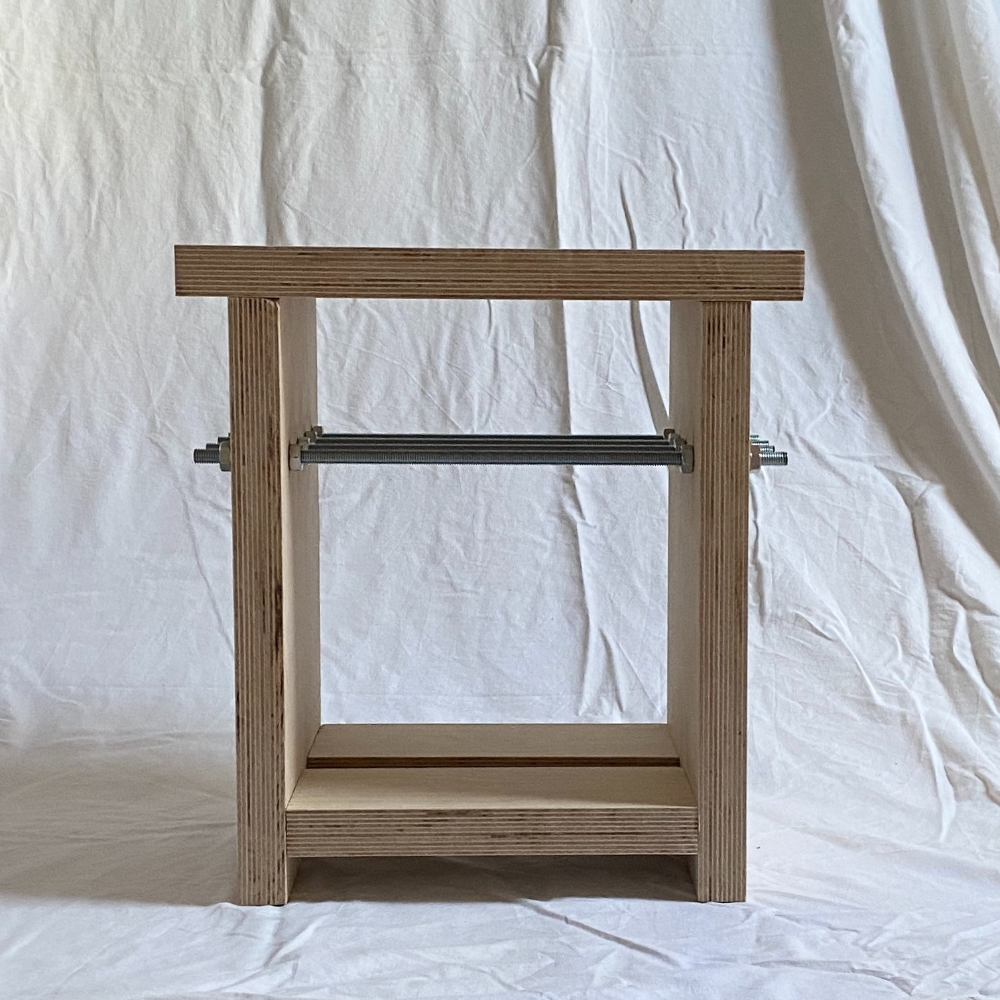
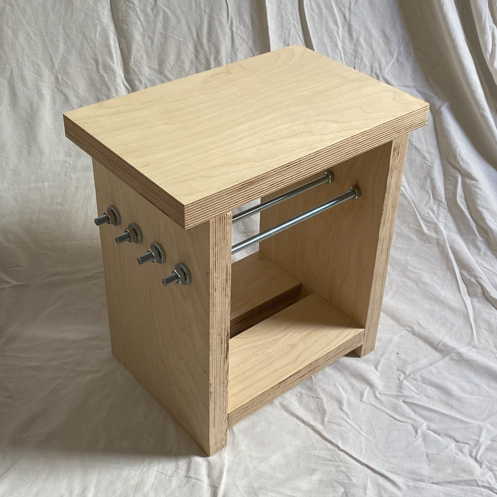
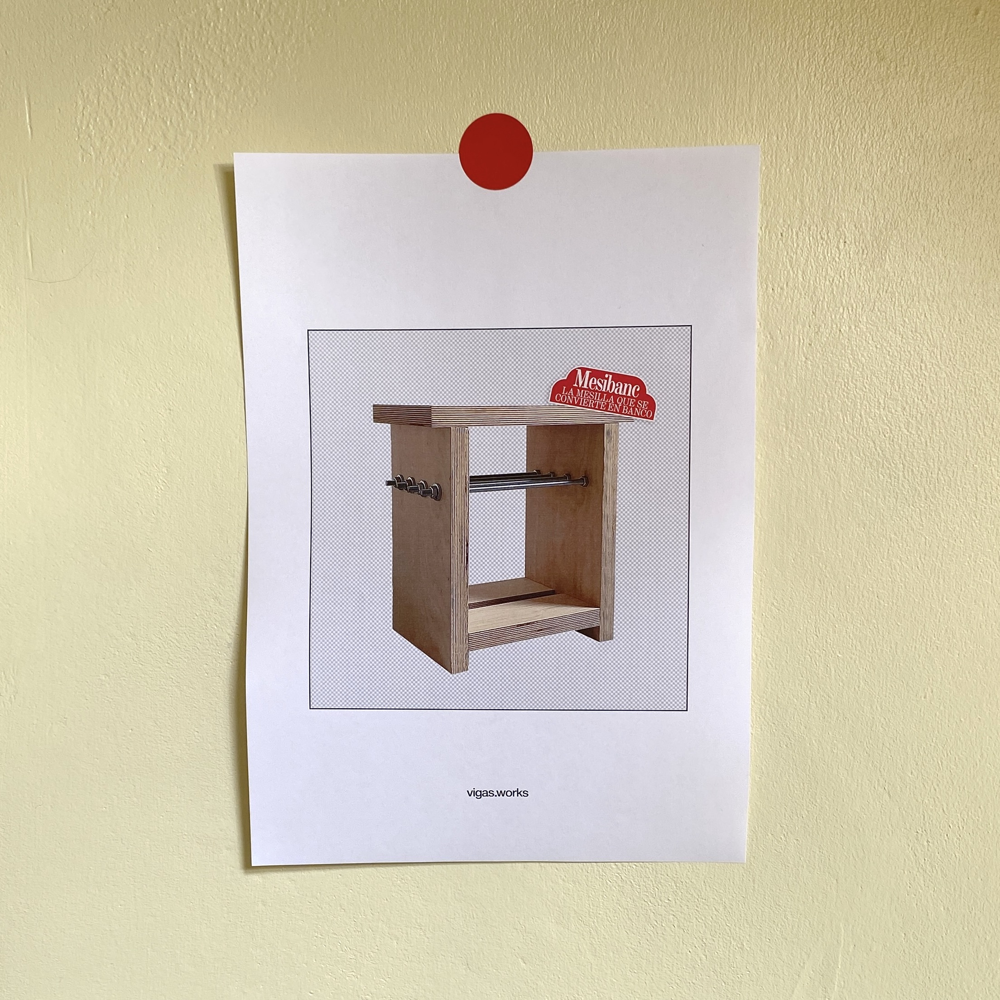
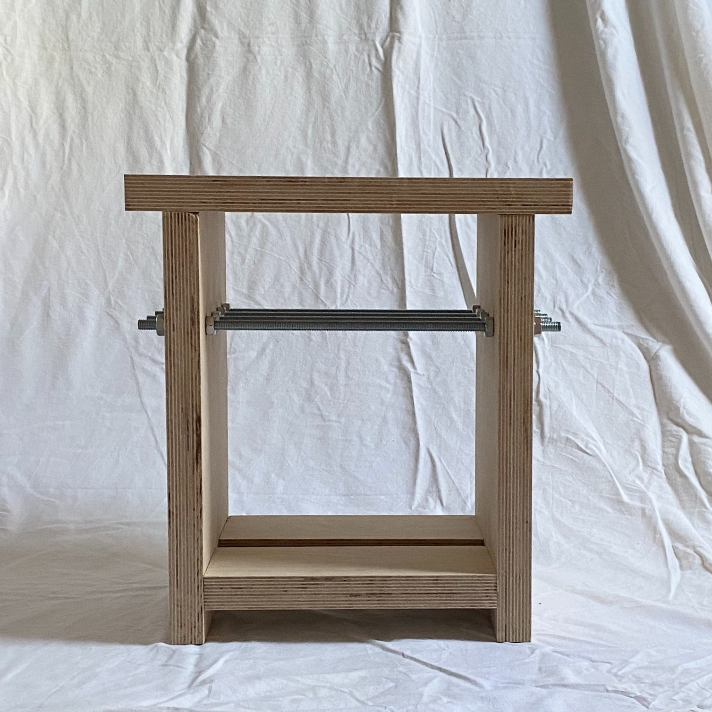
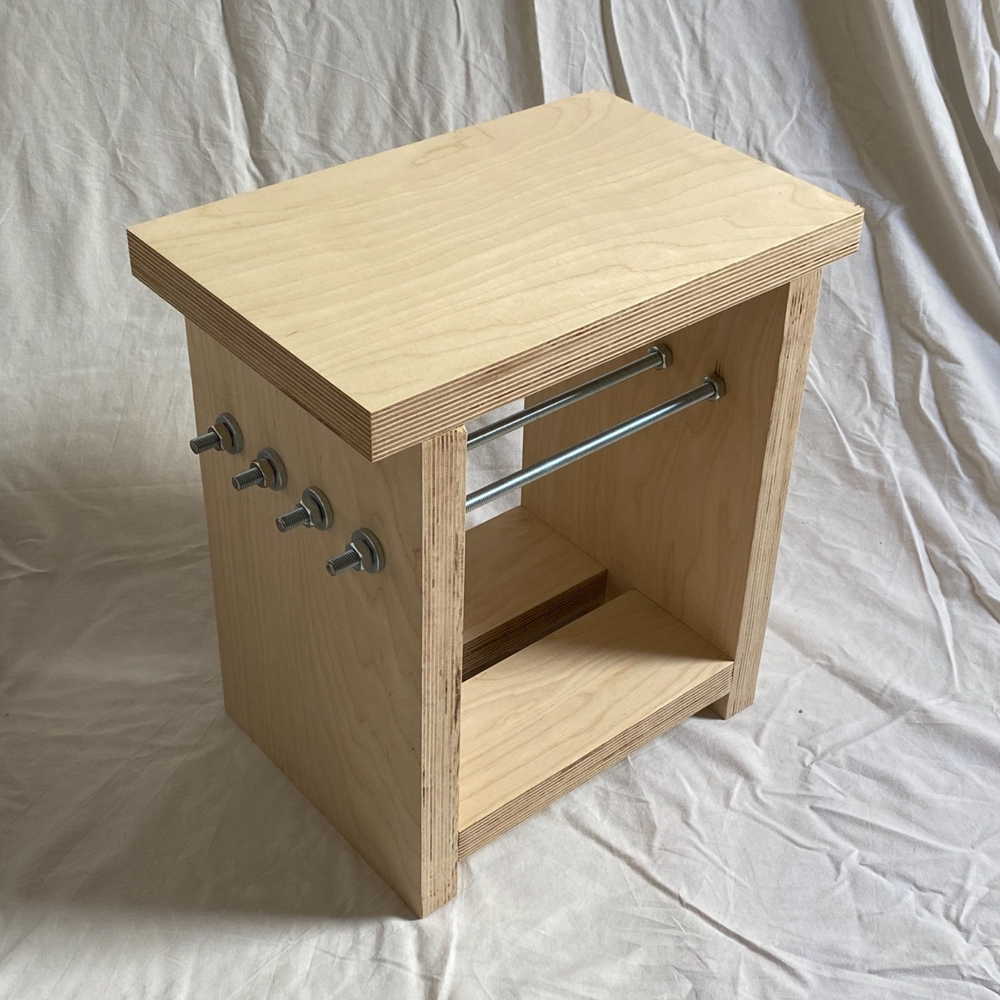
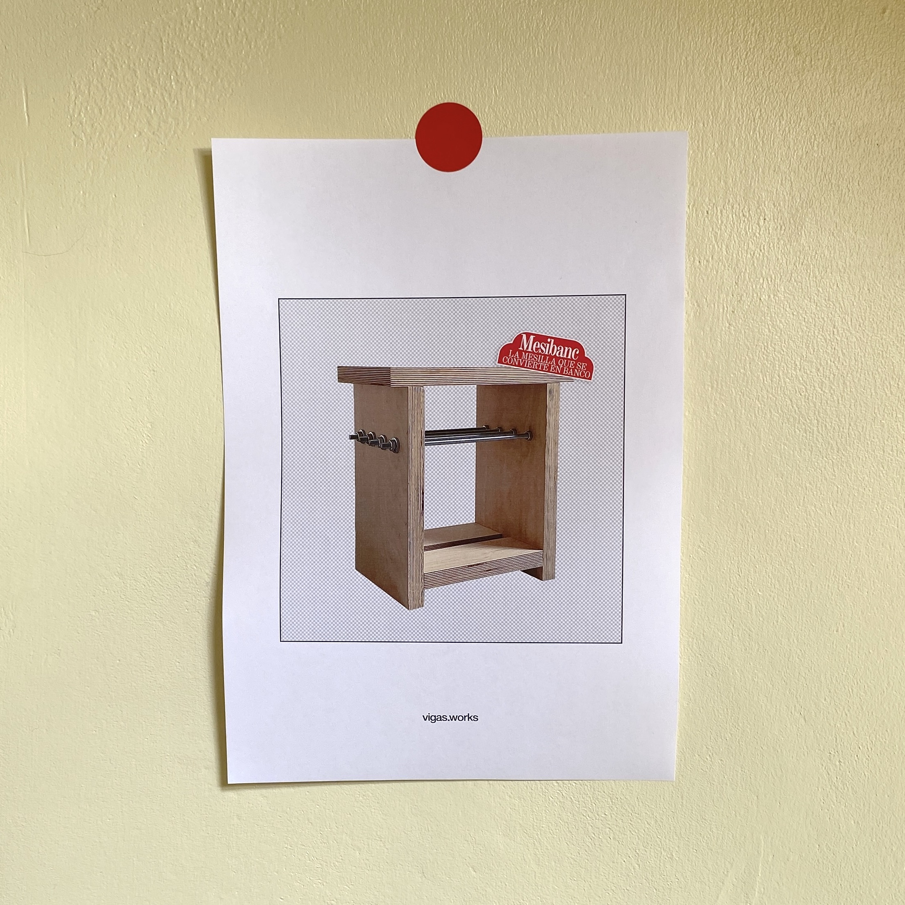

Mesibanc
Concebido como una mesa auxiliar para la cama o el sofá pero con la solidez suficiente para ser usado como banco, de ahí su nombre, mesibanc.
Cuando se me ocurrió la idea pensé en cómo podría diferenciar los espacios en el mueble, quería que pudiera guardar mis libros y libretas (objetos que siempre tengo alrededor). Lo que se me ocurrió fue dividir el espacio con las varillas, pensé que la parte de abajo debería tener altura suficiente como para depositar un libro en vertical y las varillas ser un lugar de almacenamiento temporal, por ejemplo para guardar el libro que estoy leyendo actualmente o mi libreta de ideas. La tercera parte (la parte superior) es más ancha para servir mejor como asiento, o para poner tu lámpara de noche, o tu vela, o tu incienso, o todo lo que quieras a la vez.
Los objetos bajo pedido como este están sujetos a la disponibilidad de los materiales necesarios. Si deseas realizar un encargo escríbeme primero a j@vigasworks.com (o haz click en 'escríbeme' un poco más abajo) y valoraremos las diferentes opciones posibles. Siempre estoy abierto a debatir ideas y a escuchar sugerencias.
Contrachapado de abedul
Varilla roscada
Uniones ocultas
L x W x H: 38 x 24'5 x 40 cm
Espesor de 3cm
Objeto bajo pedido
165€
 




